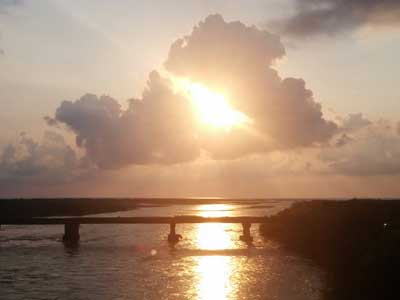

The TCT is a planned trekking route across the Caucasus. It will increase sustainable tourism and bring economic activity to remote areas, raise the profile of the protected areas in the region to ensure their continued conservation, and it will promote the connections between communities, ecosystems, and people, in a place where there is too much focus on the things that divide.


Join us on